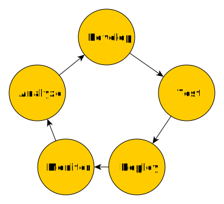
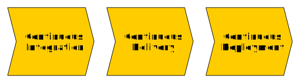
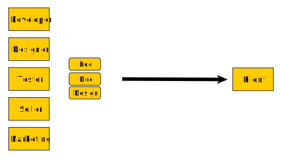

Continous .*
Wojciech Barczyński
wojciech.barczynski@wsb.wroclaw.pl
High performance teams
(Tech) metrics:
- Lead Time
- Deployment frequency
- Mean time to Recovery
- Change Fail Percent

High performance teams
Not only technical:
- Trust
- Psycological safety
- High cooperation
- ...
High performance teams
Not only technical:
- Trust
- Psycological safety
- High cooperation
- ...
Continuous .*
Continuous
- Integration (1)
- Delivery (1)
- Deployment (2)
Continuous .*
Continuous .*
Goal
- We know where we are with our code
Practices
- Automatization
- Standarization
- Tooling
- Software design and architecture
- Cooperation between teams and people
Continuous integration
- Every change validated
- We can package the software
Continuous delivery
- Our software ready to be installed
Continuous Deployment

Our software is in the hands of our customers
Continuous integration